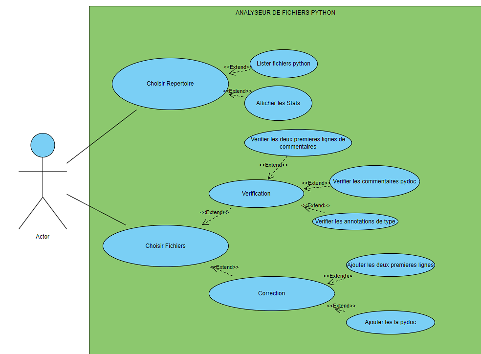
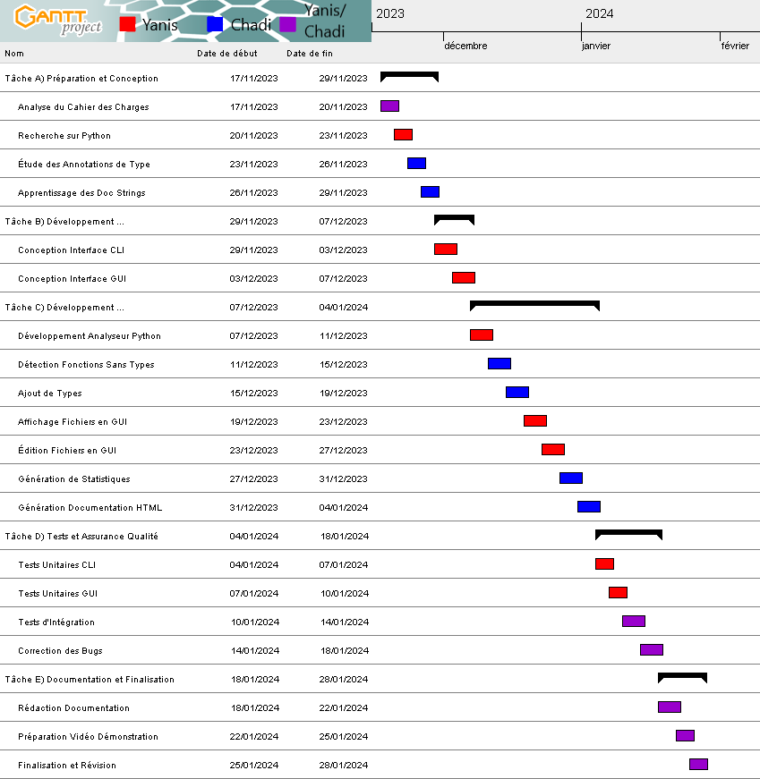
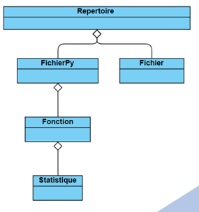

Le projet que nous avons entrepris a pour ambition la création d'une application sophistiquée,
dédiée à l'analyse méticuleuse de fichiers Python. Cette initiative est née d'un constat simple :
les développeurs et les passionnés de Python, souvent confrontés à la gestion de répertoires
volumineux de scripts, nécessitent un outil fiable et intuitif pour naviguer et évaluer leur code.
Par conséquent, notre objectif principal est de concevoir un système qui ne se contente pas de
parcourir les répertoires à la recherche de fichiers .py, mais qui les inspecte en profondeur,
évaluant et soulignant des aspects critiques tels que la syntaxe, les commentaires PyDoc, les
annotations de type et la conformité aux bonnes pratiques de codage.
Je pense qu’il serait judicieux de vous présenter le diagramme de cas d’utilisation en premier
pour avoir une vue d’ensemble sur le but du projet :

Figure 1 : Diagramme du cas d'utilisation
Répartition des tâches et planification
Dès l'analyse initiale du sujet, nous avons réparti les responsabilités en se fondant sur un
diagramme de Gantt. Cela a facilité la visualisation des échéances et des sous-tâches assignées
à chaque membre de l'équipe, permettant une approche méthodique et structurée. Voici donc notre
diagramme de Gantt que nous avons rendu :

Figure 2: Diagramme de Gantt
Architecture du Code
Classe Répertoire
La classe Répertoire est au cœur de l'application, agissant comme un gestionnaire de fichiers.
Elle s'occupe de parcourir les répertoires, d'identifier les fichiers Python et de les
distinguer des autres types de fichiers. Elle est essentielle pour la génération de
statistiques telles que le pourcentage de fichiers avec des en-têtes spécifiques, le comptage
des fonctions, et l'évaluation des annotations et commentaires PyDoc. Elle interagit
directement avec la classe FichierPy pour accéder aux détails spécifiques de chaque fichier
Python.
Classe FichierPy
FichierPy représente individuellement un fichier Python. Elle analyse le contenu du fichier
pour détecter et stocker les fonctions, tout en offrant des fonctionnalités pour ajouter des
commentaires PyDoc manquants et vérifier les en-têtes de fichiers. Cette classe travaille en
tandem avec Fonction et Statistique pour fournir une analyse détaillée de chaque fichier
Python.
Classe Fonction
La classe Fonction est utilisée par FichierPy pour stocker des informations sur
les fonctions individuelles trouvées dans les fichiers Python. Elle détient le
contenu de la fonction et fait appel à Statistique pour analyser et enregistrer
la présence de PyDoc et d'annotations de type.
Classe Statistique
Statistique sert à évaluer la présence de caractéristiques spécifiques dans le code, telles que
les annotations de type et les commentaires PyDoc. Elle est utilisée par Fonction pour attribuer
des statistiques à chaque bloc de fonction détecté.
Classe Fichier
Simple et peu complexe, la classe Fichier traite des fichiers non-Python. Bien que moins impliquée
dans les opérations d'analyse, elle assure la cohérence et l'intégrité de la gestion des fichiers
au sein de l'application.
Classe CLI
La classe CLI (Command Line Interface) est l'interface de ligne de commande qui permet à l'utilisateur
d'interagir avec l'application sans interface graphique. Elle gère les entrées de l'utilisateur et
déclenche les analyses appropriées en fonction des arguments passés, en liaison avec Repertoire et FichierPy
Classe GUI
La GUI (Graphical User Interface) est l'interface graphique de l'application. Elle offre une interaction
utilisateur conviviale, avec des boutons pour choisir des répertoires ou des fichiers et pour déclencher des
actions d'analyse. Elle est le point d'entrée visuel pour les fonctionnalités fournies par les autres classes,
la visualisation des résultats des statistiques ou l'application de corrections aux fichiers.
Chaque classe est conçue pour fonctionner ensemble dans un système intégré, où
Repertoire et FichierPy constituent les acteurs principaux de l'analyse des fichiers,
assistés par Fonction et Statistique pour le traitement détaillé. Fichier sert à gérer
les types de fichiers généraux, tandis que CLI et GUI offrent deux modes distincts d'interaction
avec l'utilisateur. La collaboration entre ces classes permet à l'application d'effectuer une
analyse complète et de fournir des retours utiles à l'utilisateur.
Voici notre diagramme de classe finale que nous avons peaufiné étape par étape :

Figure 3: Diagramme de classe simplifié du code finale
Développement et Tests
La phase de développement a été une période de création intense, où chaque ligne de code
a été méticuleusement écrite et chaque fonction a été rigoureusement inspectée.
L'implémentation des méthodes clés a été suivie par une série de tests approfondis, conçus
pour mettre à l'épreuve la robustesse et l'exactitude de notre application. Ces tests ont
été fondamentaux pour détecter les failles et les opportunités d'amélioration. Bien que
les examens aient imposé une pause dans notre rythme de travail, la reprise a été marquée
par un élan renouvelé. La construction de la CLI et de la GUI a été achevée avec un souci
du détail, assurant une expérience utilisateur fluide et intuitive.
Tableau de l'avancement du projet
2er pts d'avancement
3eme pts avancement 50%
Rendu Final
% développement
10
50
40
% Test
0
70
30
% Difficulté
5
45
50
Conclusion
Ce projet a représenté bien plus qu'un simple exercice académique;
il a été une immersion dans les réalités du développement logiciel
professionnel. Tandis qu'un projet de création de jeu aurait sans doute
été plus ludique, la nature de cette tâche analytique nous a préparés à
affronter les défis concrets que l'on rencontre dans l'environnement d'une
entreprise. Elle a impliqué non seulement la programmation, mais aussi une
collaboration étroite avec des partenaires, la nécessité de communiquer
efficacement et de surmonter les obstacles ensemble.
Ces expériences ont enrichi notre compréhension de ce que signifie
travailler en tant que développeur au sein d'une équipe, où les tâches
sont souvent complexes et multidimensionnelles, impliquant de jongler
entre différentes compétences et responsabilités. La résolution de problèmes,
bien que parfois ardue, s'est avérée être une source de satisfaction profonde,
nous permettant d'apprécier pleinement la valeur de notre travail acharné.
Regardant vers l'avenir, ce projet a posé des fondations solides pour
nos études et nos carrières. Avec une meilleure maîtrise du Java et une
expérience pratique dans le développement d'outils analytiques, nous aborderons
les projets du semestre prochain avec une confiance accrue. Nous sommes désormais
mieux équipés pour les défis à venir et impatients de mettre en pratique les
leçons apprises dans ce projet, qui a été, indéniablement, un tremplin significatif
pour notre développement personnel et professionnel.